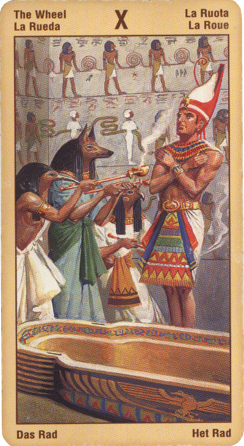

Колесо Фортуны
Колесо Жизни вращается, поэтому мы рождаемся, растем, умираем, а затем вновь возрождаемся.
По мере вращения колеса мы пожинаем плоды наших прошлых мыслей и поступков, эти плоды нередко предстают перед нами в виде удачных жизненных периодов, неслыханного везения или же необычных совпадений.
Выпадая в раскладе, эта карта нередко возвещает именно о таком неслыханном везении.
Идея сбора плодов того, что мы сами раньше посеяли, представляет собой учение, которые мы наблюдаем ежегодно во время сбора урожая, это лишь одна из многих концепций, которые древние сумели извлечь, наблюдая за цикличностью смены времен года и отмечая связанные с этим циклом праздники.
Мы получаем возможность плыть по течению вместе с жизненными силами, а не против них, и воспринимать жизнь не столько как тяжкое испытание, сколько как путешествие.
Колесо Фортуны набирает скорость: берегись вмешиваться в ход событий, не делай лишних движений, иначе снесет! Стремись к центру колеса, к его единственной неподвижной точке – твоему собственному “Я”. Остановись и наблюдай. Взгляни на свои проблемы оком стороннего наблюдателя: только так ты найдешь их решение.
Выпадая в раскладе, эта карта может указывать на то, что в вашей жизни заканчивается один этап или цикл и начинается другой. Вытащить эту карту - хорошее предзнаменование, она призывает вас поверить в процесс течения жизни. Вы можете расслабиться и избавиться от излишнего контроля, который напрягает вашу жизнь или отношения. Наша жизнь переживает циклы взлетов и падений, периоды, когда все идет хорошо и периоды, когда нам кажется, что все рушится на глазах. Жизнь циклична.
Мудрость приходит тогда, когда мы перестаем противостоять судьбе и осознаем те ключевые моменты, которые красной строкой проходят через всю нашу жизнь.
В зависимости от того, как мы относимся к судьбе, Колесо Судьбы предстанет либо как символ нашей зависимости и беспомощности перед нею, либо как жизненный урок, стимулирующий рост и взросление. На событийном уровне оно и в самом деле часто соответствует ситуациям, где мы пока ничего не можем поделать. Мы - на спуске Колеса, то есть наши планы не могут осуществиться: нам помешают "пробки" на дорогах, погода, "несговорчивость" объекта или иные непреодолимые обстоятельства. Колесо Времени показывает, что для нас ещё не настало время браться за это дело. Тогда карты в остальных позициях могут подсказать, что в данный момент необходимо сделать, чтобы перебраться на другую сторону Колеса, соответствующую подъёму, успеху, а также другим неожиданным поворотам судьбы.
Отдавать свое богатство миру может лишь человек богатый, но вместить в себя огромность божественного дара может только тот, кто не имеет ничего. То есть, тот, кто, видя преступления и страдания этого мира, все же оставит глаза открытыми и зрячими?
Хотя колесо судьбы и считается для человека благоприятным арканом, - он несет на себе отпечаток бессилия человека перед своей судьбой. Таков смысл десятого аркана. Постоянное становление, разрушение, вечные перемены и вечность перемен. Человек должен принимать свою судьбу и сознавать непостоянство как счастья, так и невзгод.
В любом случае следует помнить о том, что круговое движение колеса предполагает круговорот вещей и всего сущего от начала к концу. А в общем (в реальной жизни) - эта карта хороших предзнаменований и добрых перемен. Это переломный момент. Кончается какая-то часть вашей жизни - начинается новая. Иногда карта предсказывает неожиданную улыбку судьбы.
Колесо Фортуны являет собой слепую Судьбу, шанс, превратности судьбы, "зебру" жизни.
Удача, успех, взлет карьеры, слава. Победа, неожиданный приятный поворот судьбы. Некий риск, сулящий выгоду. Изобилие.
Колесо Фортуны для бизнесмена – лишь признак перехода от удач к неудачам или наоборот.
Выпадая в раскладе в перевернутом положении, эта карта может указывать на то, что вы пожинаете плоды своих прошлых мыслей, действий и поступков и что полученный результат для вас неутешителен. Если это так и если ситуация неожиданно и явно меняется в худшую сторону, поверьте в глубинную предопределенность жизни, которая в конечном итоге вынесет вас к более счастливым и радостным жизненным берегам. Несмотря на все неприятности, продолжайте действовать честно и прямо, тогда данный жизненный цикл завершится сам по себе и уступит дорогу новому циклу.
В качестве альтернативы, выпадая в раскладе в перевернутом положении, эта карта может свидетельствовать о том, что вы сопротивляетесь переменам, т. е. боретесь с неизбежным.
В отрицательном значении: проигрыш, провал, несчастье, неожиданный удар. Впрочем, удача или нет - посмотрите на соседние карты - они и скажут куда повернулось колесо на этот раз.